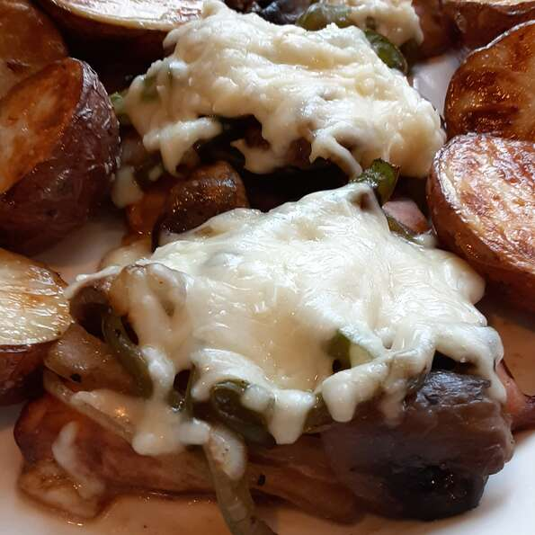

Monterey Chicken

Description
Classic Monterey Chicken with sauteed onions, peppers and mushrooms. It's worth the extra time!!
Ingredients
- 4 (5 ounce) skinless, boneless chicken breast halves
- 1 cup teriyaki marinade sauce
- ½ pound bacon
- 2 tablespoons butter
- 1 small onion, cut into long slices
- <1 small green bell pepper, cut into thin strips/li>
- 1 (8 ounce) package fresh mushrooms, coarsely chopped
- 4 slices mozzarella cheese
Steps
- To Marinate: Place chicken in a nonporous glass dish or bowl. Pour marinade over chicken and toss to coat. Cover and refrigerate to marinate for 1 to 2 hours.
- Preheat oven to 350 degrees F (175 degrees C).
- Remove chicken from the marinade and place in a 9x13-inch baking dish. Reserve 1/3 cup marinade and discard the rest.
- Bake chicken in the preheated oven for 20 to 30 minutes, or until cooked through and juices run clear.
- Meanwhile, place bacon in a large, deep skillet. Cook over medium high heat until evenly brown. Drain and set aside.
- In same skillet, melt butter over medium high heat. Saute onion, bell pepper and mushrooms for about 3 to 5 minutes. Add reserved 1/3 cup of marinade and simmer until soft. Drain and set onion mixture aside.
- Top baked chicken with bacon strips. Add onion mixture and top each breast with a slice of cheese. Bake for another 10 to 15 minutes, or until cheese is melted and bubbly.